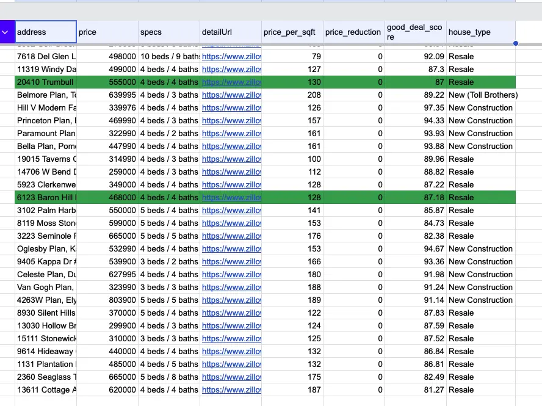

PROJECT 01
Property Listing Discovery & Tracking
Self-directed workflow automation project
n8nDockerRapidAPI
JavaScriptJSONGoogle Sheets

The problem
Manually reviewing property listings was repetitive and made it difficult to track which homes had already been selected for content.
Recorded run processed and added 12 matching listings.
What I built
- Retrieved Zillow listing data through RapidAPI.
- Processed and filtered JSON with JavaScript.
- Removed duplicate addresses and classified property types.
- Compared results with Google Sheets before appending new matches.
Selection logic
A custom heuristic ranks listings using price reduction, price per square foot, listing age, and construction type. The workflow selects a balanced set of new construction, budget resale, and higher-priced resale properties.
addresspricespecs
URLprice/sqftreduction
deal scoretype